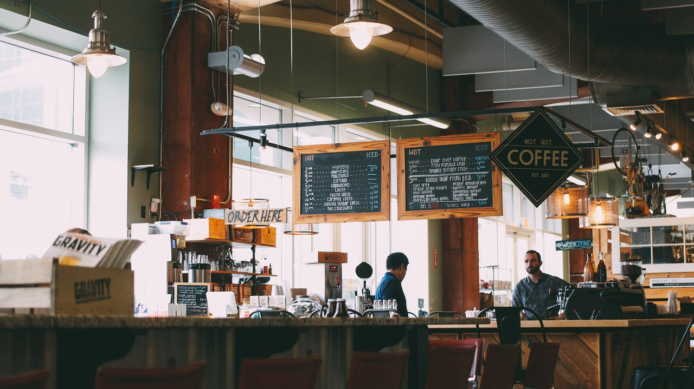

WELCOME!
The Coffee Tree Cafe is a locally owned, and operated small business, situated in the heart of MSU's St Paul campus. We are proud to roast our own beans, in house, which are produced by some of the best coffee sources around the world. We also offer a range of sandwiches, salads and homemade soups; along with a variety of cakes pastries and desserts.
